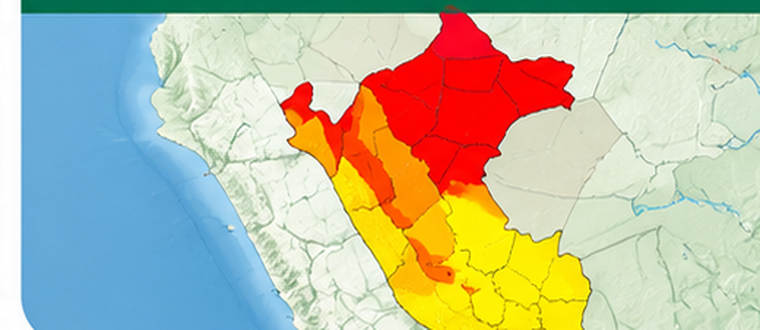

Mar cerca de PerúNOAA
—°C
Consultando el dato…
Qué significa
Compara la temperatura del mar frente a Perú y Ecuador con lo habitual para esa época. El número indica la diferencia, no la temperatura del aire.
Conocer el índice Niño 1+2 ↗OBSERVATORIO · FUENTES OFICIALES
Entiende el fenómeno, conoce el estado oficial y descubre qué puedes hacer.
El Niño, el pronóstico de lluvias y el riesgo de inundación no son lo mismo. Te mostramos cada dato con su fecha y fuente.
Es un fenómeno natural relacionado con el calentamiento de una parte del océano Pacífico y cambios en la atmósfera. Puede modificar las lluvias y las temperaturas, pero sus efectos no son iguales en todo el Perú.
Conoce qué dice la alerta oficialLos científicos comparan la temperatura del océano con lo habitual. Un mar más cálido es una señal que necesitan analizar.
En algunas zonas podrían producirse lluvias intensas u otros cambios. Una señal del mar no indica qué pasará hoy en tu calle.
Tu riesgo depende del terreno, la exposición de tu vivienda y los avisos locales. Consulta tu zona y prepárate con información oficial.
El Niño Costero se refiere a condiciones cercanas a la costa de Perú y Ecuador; los índices del Pacífico central describen otra región del océano. No deben confundirse.
La alerta oficial, el pronóstico del tiempo y los lugares expuestos a inundaciones son datos diferentes. Puedes revisar cada tema por separado.
Lee el estado oficial, su fecha y lo que significa para tu familia.
Entender la alertaConsulta lluvia y temperatura previstas para un punto de tu distrito.
Consultar mi distritoConoce los lugares identificados por CENEPRED para planificar medidas de prevención.
Ver mapas de riesgo
Imágenes ilustrativas. Los comunicados ENFEN y los mapas de CENEPRED deben consultarse en las secciones oficiales; no corresponden a las fotografías o colores mostrados arriba.
ENFEN reúne a instituciones técnicas del Estado y comunica el estado oficial de El Niño Costero en Perú.
Aquí aparecerá la situación indicada por ENFEN y la fecha del documento.
Comprobando la información publicada.
Leer el documento oficial ↗Que las autoridades y la población deben informarse y prepararse ante posibles efectos de El Niño. No significa que haya una inundación en tu distrito ni que vaya a llover hoy en todo el Perú.
Para saber si se esperan lluvias en tu zona, consulta el pronóstico de tu distrito.
Consultando la información más reciente…
Cada noticia, dato del mar y pronóstico conserva su fecha. Un pronóstico no es una observación, y los distritos mencionados por INDECI no son directamente comparables con el escenario CENEPRED. No sumes estas cifras.
Porque se utilizan mediciones y cálculos distintos. El mapa resume temperaturas de varias zonas del océano, mientras que «Niño 1+2» y «Niño 3.4» describen regiones específicas del Pacífico. Cada valor tiene su fecha y método; no deben ser idénticos. Ver la evolución del mar.
No necesitas esperar una emergencia para organizarte. Estas son medidas generales recomendadas por INDECI; no sustituyen los avisos de tu municipio ni de Defensa Civil.
Revisa si tu vivienda está cerca de ríos, quebradas o lugares donde antes hubo inundaciones o huaicos. Consulta a tu municipalidad y explora tu distrito.
Acuerden un punto de encuentro y reconozcan rutas hacia zonas seguras. Incluye a niños, adultos mayores y personas que requieran ayuda.
Ten lista una mochila de emergencia adecuada a tu familia y mantente atento a los avisos oficiales de SENAMHI, INDECI y autoridades locales.
No cruces ríos, quebradas ni calles inundadas. Si las autoridades indican evacuar, utiliza las rutas seguras identificadas.
Una alerta sobre El Niño no es lo mismo que una orden de evacuación. Las decisiones inmediatas se basan en avisos y condiciones de tu localidad.
La alerta para Perú corresponde al comunicado oficial de ENFEN.
Todo el Perú. Los indicadores se ajustan a la zona y las fechas que elijas.
Consultando el dato…
Compara la temperatura del mar frente a Perú y Ecuador con lo habitual para esa época. El número indica la diferencia, no la temperatura del aire.
Conocer el índice Niño 1+2 ↗Consultando el dato…
Compara el calor del mar en una región del Pacífico con lo habitual para esa época. Ayuda a seguir El Niño; el diagnóstico oficial para Perú lo emite ENFEN.
Conocer el índice Niño 3.4 ↗Riesgo alto o muy alto
Cuenta los distritos que CENEPRED clasifica con riesgo alto o muy alto para el peligro elegido. Sirve para prepararse; no cuenta emergencias actuales.
Ver los distritos ↗Consultando el pronóstico…
Para empezar, elige tu departamento y distrito. Después selecciona qué quieres ver: el estado del mar, el tiempo previsto o las zonas con riesgo. Las opciones especializadas están ocultas.
Fechas de las fuentes · desliza para ver más →
Elige qué quieres consultar. Cada capa conserva su fuente y fecha.
Cargando la vista del mapa…
Arrastra para mover el mapa. En celular, usa dos dedos para acercar. «Pausar gestos» permite deslizar la página desde el mapa.
Los datos científicos explicados en lenguaje cotidiano: qué es El Niño, qué pasa hoy, qué consecuencias trae y qué hacer en casa.
Sección 1 · Fuente: NASA y OMM
Imagina el océano Pacífico como una gran bañera. Normalmente el viento empuja el agua tibia hacia un lado. En El Niño, ese empuje falla y el agua tibia vuelve hacia nuestras costas.


El agua caliente se expande y ocupa más espacio. Por eso, donde el mar está más caliente, su nivel sube unos centímetros. Los satélites miden esa diferencia desde el espacio.
Boyas ancladas en el océano miden la temperatura bajo la superficie. Así se detecta el calor acumulado en profundidad, que luego sale a la superficie y alimenta las tormentas.
Sección 2 · Fuente: NOAA CPC y OMM · Estado octubre/noviembre 2026
Advertencia de El Niño Fuerte a Muy Fuerte
Se espera que continúe desde finales de 2026 hasta el verano de 2027 (enero a marzo).
Casi 100%
En palabras simples: es prácticamente seguro que El Niño siga fuerte o muy fuerte hasta el verano de 2027.
Más de 83%
En palabras simples: más de 8 de cada 10 posibilidades de que El Niño se mantenga fuerte o muy fuerte.
Cada barra muestra cuántos grados más caliente de lo normal está el mar. La marca en +0,5 °C es el punto desde el cual los científicos consideran que ya hay El Niño.
+3,9 °C
El mar frente a la costa norte del Perú está casi 4 grados más caliente de lo normal, lo que funciona como combustible para lluvias torrenciales.
Algunos sectores del Pacífico oriental superan los +4,0 °C en la superficie. Bajo el agua, el calor llega a +10,0 °C sobre lo normal: es como una gran reserva de energía lista para salir a la superficie.
+2,1 °C
En el centro del océano Pacífico, la zona que los científicos usan como termómetro oficial de El Niño está 2 grados más caliente de lo normal.
Esquema del territorio (toca una zona)
Esquema ilustrativo, no es un mapa oficial.
Peligro
Alto riesgo de lluvias intensas, desbordes de ríos y activación de quebradas, sobre todo en el verano de diciembre 2026 a marzo 2027.


Arriba, lluvias en la costa; abajo, sequía en la Sierra Sur: un mismo fenómeno, efectos opuestos según la zona.
Sección 3 · Fuente: OPS/OMS 2026-2027

70
personas fallecidas en el Perú
633
establecimientos de salud afectados
Datos de la OPS/OMS del episodio previo (diciembre 2025 a agosto 2026). Por eso debemos prepararnos desde ahora para el pico de inicios de 2027: hospitales y postas dañados también dejan sin atención a quienes más la necesitan.

Dengue, malaria y zika
El agua estancada por las lluvias (o el agua almacenada sin tapa durante sequías) multiplica los criaderos del zancudo que transmite estas enfermedades.
Cólera, leptospirosis y diarreas
Aparecen cuando los desagües colapsan y se contaminan el agua potable y los alimentos tras las inundaciones.

Personas mayores, niños y quienes tienen enfermedades del corazón o pulmón son los más vulnerables.

Más de 5,2 millones
de personas en las Américas enfrentan inseguridad alimentaria aguda ligada a El Niño. Es decir, no tienen asegurada la comida suficiente.
Causas: pérdida de cosechas y migración de peces de agua fría, como la anchoveta, que se alejan del mar caliente.
Sección 4 · Módulo práctico
Marca cada acción cuando la completes. Tu avance se guarda en este navegador.
Tu preparación
0 de 0


Fuentes oficiales: OMM (probabilidades y estado global), NOAA (regiones Niño y RONI), NASA (satélites y boyas) y OPS/OMS (impactos en salud 2026-2027). Fotografías: Unsplash. Esquemas ilustrativos y simplificados.
Por encima de 0: mar más caliente de lo habitual. Por debajo de 0: más frío. Las líneas comparan dos regiones del Pacífico, no ciudades.
Verificando cobertura por fuente…
Cada tarjeta muestra cuántos distritos tienen riesgo alto o muy alto según CENEPRED, y cuántas localidades tienen pronóstico SENAMHI. Toca una tarjeta para consultar esa zona. Se incluyen los 24 departamentos y Callao.
Pronóstico según la fuente y el ámbito seleccionados.
| Distrito / UBIGEO | Para cuándo | Más calor | Más frío | Lluvia y condiciones previstas | Fuente |
|---|
Busca una palabra que no conozcas y toca su nombre para leer una explicación sencilla.
Sin coincidencias. Prueba otra palabra o cambia la categoría.
Mira primero la fecha del dato: te dice a qué momento corresponde. «Última revisión correcta» indica cuándo pudimos descargarlo y comprobarlo. Descargar hoy un informe antiguo no lo vuelve actual. Las horas se muestran en horario de Lima.
Aquí puedes abrir los documentos originales. Cada uno conserva su fecha de publicación o el periodo que analiza. Las noticias y los simulacros se muestran como referencias, sin contarlos como emergencias del mapa.
Mar: índices regionales NOAA CPC, análisis preliminar OISST v2.1 y corrientes geostróficas de altimetría experimental NOAA NESDIS. Cada producto conserva su fecha y cobertura. Una anomalía aislada no declara un evento.
NOAA GFS: malla de 0,25°, celda más próxima a un punto interior de cada distrito de la cartografía CENEPRED 2025–2027. Temperatura a 2 m y precipitación acumulada en periodos de 24 horas, con inicio y fin explícitos. La fecha del filtro indica el cierre local. Una celda puede abarcar varios distritos pequeños y no reflejar su relieve. No es una estación ni un promedio de toda la superficie distrital.
SENAMHI: temperaturas y descripción por localidad. No se inventan cantidades de lluvia ni probabilidades que la fuente no publica. Las localidades sin correspondencia distrital verificable no se asignan a un distrito.
Riesgo: categorías distritales y puntos documentados de SIGRID. Los puntos no equivalen a emergencias actuales, daños ni probabilidad diaria.
Revisamos las fuentes automáticamente. Cada entidad publica a su propio ritmo, por eso las fechas pueden ser distintas.
Comprobamos las fechas, las unidades y la ubicación de los datos. Si una descarga falla, conservamos la última que pasó los controles y lo indicamos junto a la fuente. Los datos que faltan se muestran como «sin dato».
Validación de esquema, unidades, fechas, rangos físicos, UBIGEO, coordenadas, duplicados y paginación completa. No se rellenan valores ausentes ni se reconstruyen pronósticos que no fueron archivados.
Ver actualizaciones automáticas ↗